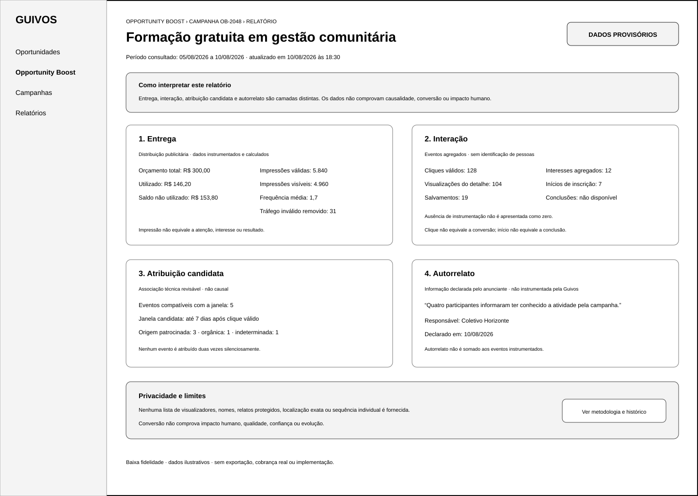
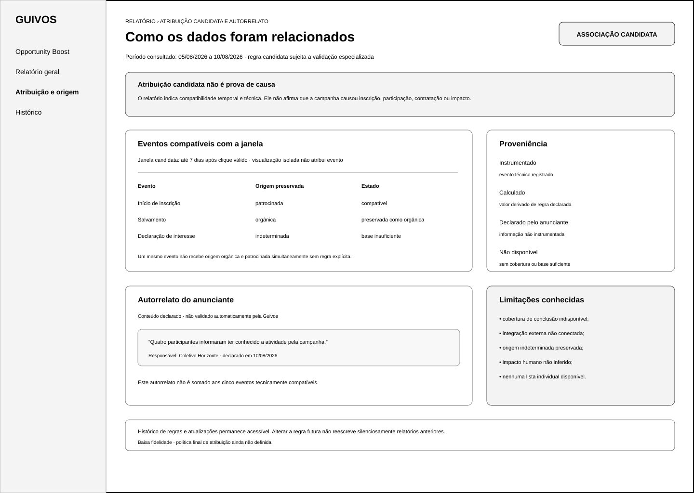
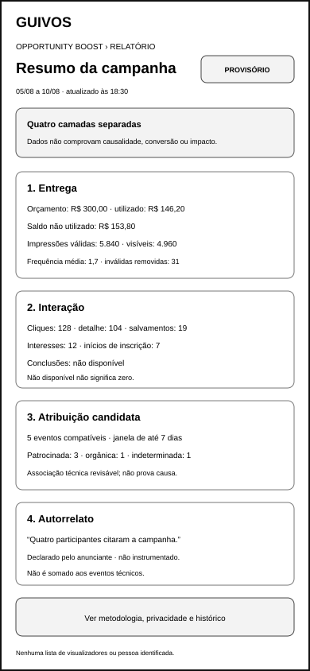
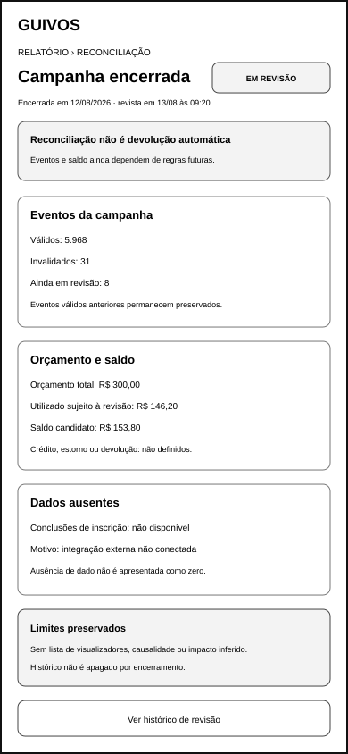

Wireframes de Baixa Fidelidade do Relatório Agregado do Opportunity Boost¶
1. Finalidade¶
Este documento materializa o relatório agregado do Opportunity Boost para computador e aplicativo móvel.
O pacote demonstra como o anunciante poderá consultar entrega, interação, atribuição candidata, autorrelato, reconciliação e limitações de interpretação sem:
- confundir impressão ou clique com conversão;
- apresentar atribuição candidata como causalidade comprovada;
- transformar autorrelato em evento instrumentado;
- preencher ausência de dado ou supressão com zero;
- revelar pessoas expostas, identificadores individuais ou lista de visualizadores;
- misturar origem orgânica e patrocinada silenciosamente;
- somar eventos heterogêneos em um total sem unidade;
- inferir impacto humano, evolução, confiança ou qualidade;
- apresentar saldo como crédito, estorno ou devolução confirmada;
- prometer precisão que a instrumentação ou agregação não sustenta;
- iniciar algoritmo, cobrança real, protótipo ou Engenharia de Produto.
2. Estado de validação¶
A UXA-049 examinou os quatro artefatos e os considerou:
Funcionalmente válidos após reformulação.
As reformulações principais foram:
- criar gate explícito de agregação e supressão;
- separar
não exibido por agregação,não disponívele zero; - mostrar proveniência e estado junto de cada camada;
- substituir linhas semelhantes a eventos individuais por agregados por tipo;
- vincular a versão da regra candidata ao período consultado;
- separar tipos e unidades na reconciliação;
- reforçar que autorrelato não é verificado automaticamente;
- alinhar conceitos entre computador e aplicativo móvel.
Validação funcional não equivale a política final, acessibilidade técnica, teste com usuários, protótipo ou implementação.
3. Pergunta funcional do conjunto¶
O anunciante distingue as quatro camadas, reconhece proveniência e estado, compreende ausência e supressão, preserva origens sem dupla atribuição e consulta reconciliação sem interpretar agregados como rastreamento, causalidade, impacto ou direito financeiro?
A UXA-049 responde positivamente após as reformulações registradas.
4. Artefatos¶
| Artefato | Estado principal | Canal | Dimensão |
|---|---|---|---|
| visão geral agregada | dados provisórios durante campanha | web para computador | 1.440 × 1.024 |
| atribuição e autorrelato | regra, proveniência e interpretação | web para computador | 1.440 × 1.024 |
| visão geral agregada | resumo móvel durante campanha | aplicativo móvel | 390 × 844 |
| reconciliação e ausência de dados | encerramento e revisão | aplicativo móvel | 390 × 844 |
Todos os artefatos utilizam baixa fidelidade, dados ilustrativos e rótulos textuais independentes de cor.
5. Artefatos visuais¶
5.1 Visão geral agregada para computador¶

docs/assets/wireframes/uxa-048-aggregated-report-overview-desktop.svg
Demonstra:
- campanha, período consultado e última atualização;
- estado
provisório · não reconciliado; - entrega instrumentada e calculada;
- interação instrumentada quando disponível;
- atribuição calculada pela regra candidata vigente;
- autorrelato declarado e não verificado automaticamente;
não disponívelcom motivo;não exibido por agregaçãosem equivalência a zero;- aviso de privacidade, limiar pendente e limites de interpretação.
5.2 Atribuição candidata e autorrelato para computador¶

docs/assets/wireframes/uxa-048-aggregated-report-attribution-desktop.svg
Demonstra:
- versão da regra candidata;
- período e atualização associados à regra;
- agregados por tipo de evento, não linhas individuais;
- associação candidata patrocinada, origem orgânica e origem indeterminada;
- regra contra dupla atribuição silenciosa;
- proveniência instrumentada, calculada, em revisão e suprimida;
- autorrelato institucional não verificado automaticamente;
- quantidade sujeita a supressão;
- histórico sem reescrita retroativa silenciosa.
5.3 Visão geral agregada móvel¶

docs/assets/wireframes/uxa-048-aggregated-report-overview-mobile.svg
Demonstra:
- resumo vertical das quatro camadas;
- proveniência e estado em cada bloco;
- período e atualização no topo;
- ausência de dado com motivo;
- atribuição candidata com versão da regra;
- detalhamento condicionado à agregação;
- autorrelato declarado e não verificado;
- acesso à metodologia, privacidade, regra e histórico.
5.4 Reconciliação e ausência de dados móvel¶

docs/assets/wireframes/uxa-048-aggregated-report-reconciliation-mobile.svg
Demonstra:
- campanha encerrada e ainda não reconciliada;
- impressões válidas, invalidadas e em revisão separadas;
- cliques válidos e em revisão separados;
- proibição de total heterogêneo entre unidades diferentes;
- orçamento utilizado sujeito à revisão;
- saldo candidato separado;
- campo não disponível e campo suprimido;
- estados possíveis até reconciliação;
- reconciliação sem promessa financeira, causal ou de impacto.
6. Estrutura obrigatória em quatro camadas¶
6.1 Entrega¶
A camada de entrega apresenta:
- orçamento total;
- orçamento utilizado;
- saldo não utilizado;
- período da campanha;
- período consultado;
- status da campanha;
- impressões válidas;
- impressões visíveis, quando mensuráveis;
- frequência média;
- tráfego inválido removido;
- data e horário de atualização;
- proveniência instrumentada ou calculada;
- estado provisório, em revisão ou reconciliado.
Entrega descreve distribuição publicitária. Não representa interesse, conversão, atribuição ou impacto.
6.2 Interação¶
A camada de interação poderá apresentar, quando instrumentado:
- cliques válidos;
- visualizações do detalhe;
- salvamentos;
- declarações de interesse agregadas;
- início de inscrição ou contratação;
- conclusão instrumentada, quando tecnicamente disponível e legitimamente vinculada.
Clique não equivale a interesse confirmado. Início não equivale a conclusão. Conclusão instrumentada não equivale a impacto humano.
6.3 Atribuição candidata¶
A camada de atribuição candidata deverá mostrar:
- tipo de evento agregado;
- total compatível com a janela;
- versão da regra candidata;
- período em que a regra foi aplicada;
- origem patrocinada preservada como associação candidata;
- origem orgânica preservada;
- origem indeterminada quando não houver base suficiente;
- condição de instrumentação;
- estado provisório ou em revisão;
- regra contra dupla atribuição silenciosa;
- caráter técnico, revisável e não causal.
Atribuição candidata não afirma que o anúncio causou o evento.
6.4 Autorrelato¶
A camada de autorrelato deverá mostrar:
- informação declarada pelo anunciante;
- responsável institucional;
- data da declaração;
- período ao qual se refere;
- estado
não verificado automaticamente pela Guivos; - quantidade somente quando a regra de agregação permitir;
- identificação explícita como informação não instrumentada.
Autorrelato não será somado silenciosamente a eventos instrumentados e não será apresentado como evidência independente.
7. Proveniência e estado dos dados¶
Cada métrica ou informação deverá possuir origem e estado compreensíveis:
| Rótulo | Significado |
|---|---|
| instrumentado | evento registrado por mecanismo técnico definido |
| calculado | valor derivado de eventos ou regra declarada |
| declarado pelo anunciante | informação fornecida por responsável autorizado |
| provisório | dado disponível antes de revisão completa |
| em revisão | dado sujeito a validação ou reconciliação |
| parcialmente reconciliado | parte dos eventos concluída e parte pendente |
| reconciliado | tratamento operacional definido concluído |
| não disponível | sem instrumentação, cobertura ou base suficiente |
| não exibido por agregação | valor suprimido pela regra de privacidade aplicável |
Não disponível, não exibido por agregação e zero não são equivalentes.
8. Período, atualização e regra vigente¶
O relatório deverá distinguir:
- período total da campanha;
- período atualmente consultado;
- data e horário da última atualização;
- versão da regra candidata aplicada;
- dados provisórios;
- dados em revisão;
- dados parcialmente reconciliados;
- dados reconciliados;
- campos indisponíveis ou suprimidos.
Uma campanha ativa poderá apresentar dados provisórios. Encerramento não torna todos os dados automaticamente reconciliados.
Mudança futura da regra candidata não reescreverá silenciosamente relatórios anteriores.
9. Origem orgânica e patrocinada¶
Quando um evento puder possuir múltiplas origens, a interface deverá:
- preservar registros orgânicos;
- preservar associações candidatas patrocinadas;
- indicar origem indeterminada quando necessário;
- impedir dupla atribuição silenciosa;
- explicar a janela candidata;
- apresentar agregados por tipo de evento;
- não fornecer sequência individual;
- não reclassificar interação orgânica como patrocinada somente porque houve exposição à campanha.
Correspondência orgânica continua independente de distribuição paga.
10. Agregação e supressão¶
Detalhamentos somente serão exibidos quando a regra de agregação aplicável permitir.
Quando a condição não for atendida:
- a interface mostrará
não exibido por agregação; - o valor não será substituído por zero;
- a existência ou ausência de evento individual não será confirmada;
- nenhuma divisão pequena por origem será revelada;
- o motivo da supressão será legível.
O limiar definitivo permanece pendente de política especializada de privacidade e segurança.
11. Ausência de dados¶
Ausência de dado poderá ocorrer por:
- métrica não instrumentada;
- integração indisponível;
- cobertura incompleta;
- evento fora da janela;
- base insuficiente;
- processamento ainda em revisão;
- opção legítima da pessoa ou do anunciante;
- regra de privacidade ou agregação.
A interface deverá explicar o motivo conhecido sem inventar valor, tendência ou causa.
12. Privacidade¶
O relatório não deverá fornecer:
- lista de visualizadores;
- nomes, perfis ou identificadores de pessoas expostas;
- sequência individual de navegação;
- relatos protegidos;
- compreensão inicial, Momento Atual ou Próximo Passo;
- localização exata ou histórico territorial individual;
- inferências sensíveis;
- segmentação individual retrospectiva.
Resultados serão apresentados de forma agregada e sujeitos a política posterior de privacidade e segurança.
13. Reconciliação¶
A reconciliação deverá separar por tipo e unidade:
- impressões válidas, invalidadas e em revisão;
- cliques válidos, invalidados e em revisão;
- outros eventos instrumentados em blocos próprios;
- campos indisponíveis ou suprimidos;
- orçamento utilizado associado aos eventos válidos, quando aplicável;
- saldo não utilizado;
- tratamento candidato do saldo;
- data da última revisão;
- histórico de decisões.
Impressões, cliques, salvamentos e inscrições não serão somados em um total heterogêneo.
Reconciliado representa conclusão do tratamento operacional definido. Não equivale automaticamente a devolução, crédito, estorno, causalidade, impacto ou encerramento jurídico, fiscal e contábil.
14. Limitações de interpretação¶
O relatório deverá declarar que:
- alcance não é compreensão;
- impressão não é atenção garantida;
- clique não é conversão;
- salvamento não é participação;
- início de inscrição não é conclusão;
- atribuição candidata não é causalidade;
- autorrelato não é evento instrumentado;
- conversão não é impacto humano;
- ausência ou supressão não é zero;
- número agregado não comprova qualidade, confiança ou evolução.
15. Acessibilidade e linguagem¶
- camada, origem e estado do dado serão textuais;
- significado não dependerá de cor;
- valores terão rótulo, unidade e período;
- abreviações técnicas possuirão explicação;
- dados ausentes e suprimidos terão motivo legível;
- avisos não usarão culpa, urgência ou escassez artificial;
- tabelas e cartões possuirão ordem de leitura coerente;
- atualizações e estados provisórios serão anunciáveis;
- autorrelato será identificado antes do conteúdo declarado;
- nenhum agrupamento aparentará registro individual.
Esta referência não conclui acessibilidade técnica.
16. Proteções preservadas¶
- pagamento não compra relevância, qualidade, confiança ou impacto;
- relatório não altera ranking orgânico;
- nenhum perfil publicitário individual é criado;
- anunciante não recebe lista de visualizadores;
- dados protegidos não alimentam o relatório;
- origem orgânica não é apagada;
- dupla atribuição silenciosa é proibida;
- supressão não é convertida em zero;
- saldo não é devolução confirmada;
- relatório não garante entrega, conversão ou resultado;
- Engenharia de Produto permanece pausada.
17. Limites¶
Este incremento não cria:
- política final de atribuição;
- política final de reconciliação, saldo, crédito, estorno ou disputa;
- limiar definitivo de agregação e privacidade;
- estados de erro completos;
- algoritmo de entrega ou leilão;
- antifraude técnico;
- perfil publicitário;
- exportação real de dados;
- design visual final;
- protótipo navegável;
- teste com usuários;
- checkout, faturamento, cobrança ou Engenharia de Produto.
18. Próximos atos governados¶
Após integração e nova autorização, poderão ocorrer separadamente:
- validar funcionalmente o conjunto completo de wireframes do Opportunity Boost;
- criar estados de erro, inventário insuficiente e preferência publicitária;
- criar estados móveis adicionais de gestão, se priorizados;
- testar relatório, atribuição, autorrelato, agregação e reconciliação com Organizações e Coletivos;
- iniciar políticas especializadas somente após autorização própria.
Nenhum ato é iniciado automaticamente.